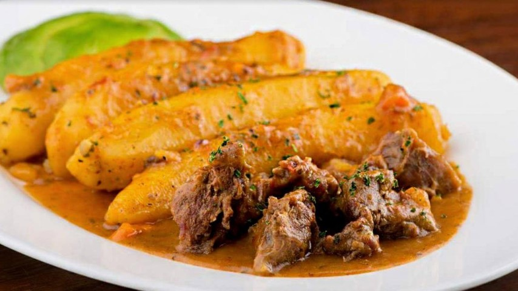

Matoke

Description
Matoke is a traditional Ugandan dish made from steamed or boiled green bananas. It is a staple food in Uganda and is usually served with groundnut sauce, meat or beans.
Matoke is loved across Uganda and is often served at special occasions and family gatherings.
Ingredients
- 10 green bananas (matoke)
- 1 onion chopped
- 2 tomatoes chopped
- 500g beef or chicken
- 2 cups groundnut sauce
- Salt to taste
- Cooking oil
- Banana leaves for wrapping
Steps
- Peel the green bananas and wash them clean.
- Wrap the bananas in banana leaves.
- Place in a sufuria with a little water.
- Steam for 45 minutes until soft.
- In another pan fry onions until golden.
- Add tomatoes and cook for 5 minutes.
- Add meat and cook until done.
- Add groundnut sauce and simmer for 10 minutes.
- Mash the steamed matoke slightly.
- Serve matoke with the sauce on top.
Home